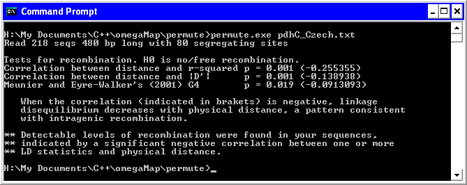

Do I need omegaMap?
Recombination in your sample of genes causes the evolutionary tree to change along the sequence. That violates the assumption of phylogenetic methods that there is a single tree for the sequence. Simulation studies [1, 2, 3] have shown that can have unexpected effects on inference, and in the case of detecting positive selection, can cause false positive rates up to 90%. omegaMap is a method for estimating variation in selection pressure along a sequence in the presence of recombination [4].
Has there been recombination in my sequences?
A simple permutation test can rapidly detect recombination in a set of DNA or RNA sequences. The program permute gives a p value for the null hypothesis of no recombination in your data. If the p value is significant (p < 0.05) then recombination is detectable in your sequences and you should not apply phylogenetic-based methods to the data. More on how permute works.
To use the program, at the command line typepermute file.txt
or
permute file.txt 999
where file.txt is the name of your FASTA format sequence file, and 999 is the number of permutations. If omitted, the default is 999 permutations. The output will look something like this:
Download permute
permute can be downloaded as a ready-to-use executable or as source code using the links below.
- Download ready-to-use executables
-
Download source code
- Bugs and version information
- Back to software
References
- Schierup, M. H., and J. Hein (2000)
Consequences of recombination on traditional phylogenetic analysis.
Genetics 156: 879-891. - Anisimova, M., R. Nielsen and Z. Yang (2003)
Effect of recombination on the accuracy of the likelihood method for detecting positive selection at amino acid sites.
Genetics 164: 1229-1236. - Shriner, D., D. C. Nickle, M. A. Jensen and J. I. Mullins (2003)
Potential impact of recombination on sitewise approaches for detecting positive natural selection.
Genetical Research 81: 115-121. - Wilson, D. J. and G. McVean (2006)
Estimating diversifying selection and functional constraint in the presence of recombination.
Genetics 172: 1411-1425.


- Bugs and version information